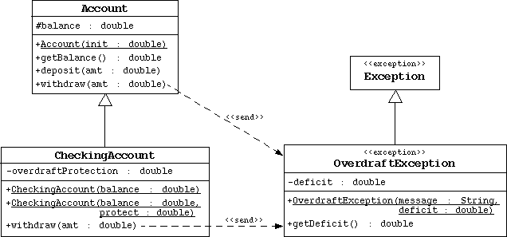

Step7: Create Your Own Exception
Objective
In this exercise you will create an OverdraftException that is
thrown by the withdraw method in the Account class.
Directions

Start by changing your working directory to /step7
on your computer. Create the banking directory. Copy the previous
Banking project files in this package directory.
Create the OverdraftException Class
- Create a public class, called OverdraftException, in the
banking.domain package. This class extends the Exception class.
- Add a private attribute called deficit that holds a double.
Add a public accessor called getDeficit.
- Add a public constructor that takes two arguments: message and
deficit. The message parameter should be passed to the
super class constructor. The deficit parameter initializes the
deficit attribute.
Modify the Account Class
Modify the witdraw method:
- Rewrite the witdraw method so that it does not return a value
(that is, void). Declare that this method throws the
OverdraftException.
- Modify the code to throw a new exception that specifies "Insufficient funds"
and the deficit (the amount requested subtracted by the current balance).
Modify the CheckingAccount Class
Modify the witdraw method:
- Rewrite the witdraw method so that it does not return a value
(that is, void). Declare that this method throws the
OverdraftException.
- Modify the code to throw an exception if necessary. There are two
cases that need to be handled. First, there is a deficit with no
overdraft protection from the savings account; use the message "No
overdraft protection" for this exception. Second, the overdraftProtection
amount is sufficient to cover the deficit; use the message
"Insufficient funds for overdraft protection" for this exception.
Compile and Run the TestBanking Program
You should see the following output:
Customer [Simms, Jane] has a checking balance of 200.0 with a 500.00 overdraft protection.
Checking Acct [Jane Simms] : withdraw 150.00
Checking Acct [Jane Simms] : deposit 22.50
Checking Acct [Jane Simms] : withdraw 147.62
Checking Acct [Jane Simms] : withdraw 470.00
Exception: Insufficient funds for overdraft protection Deficit: 470.0
Customer [Simms, Jane] has a checking balance of 0.0
Customer [Bryant, Owen] has a checking balance of 200.0
Checking Acct [Owen Bryant] : withdraw 100.00
Checking Acct [Owen Bryant] : deposit 25.00
Checking Acct [Owen Bryant] : withdraw 175.00
Exception: No overdraft protection Deficit: 50.0
Customer [Bryant, Owen] has a checking balance of 125.0